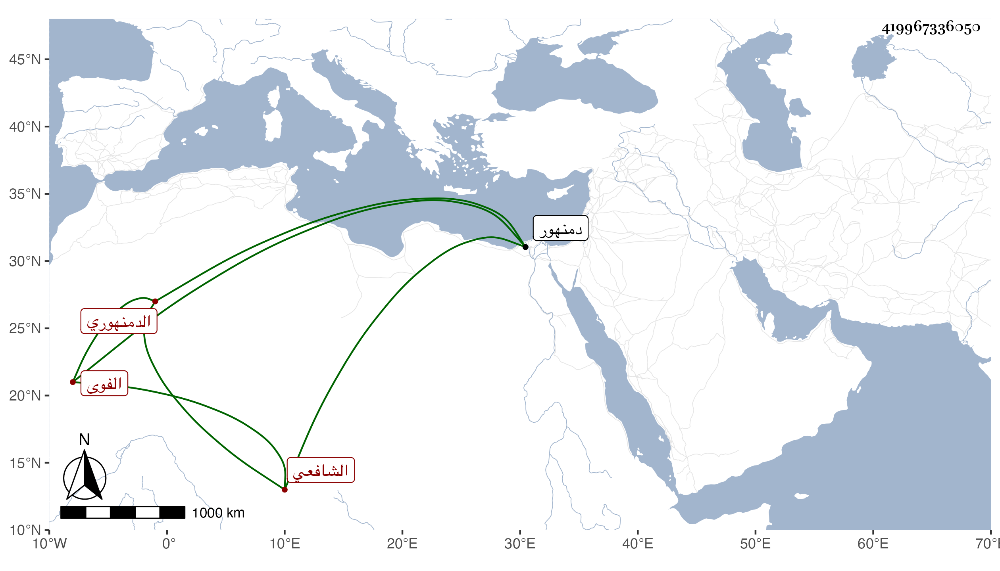

0902Sakhawi.DawLamic.ITO20230111-ara1.EIS1600.419967336050
Biography ID: 419967336050
486
محمد بن علي بن عبد الرحمن بن عيسى بن أحمد بن محمد الشمس الدمنهوري ثم الفوى الفخاري نسبة لبيع الفخار الشافعي . ولد سنة اثنتين وتسعين وسبعمائة بدمنهور ونشأ بها فقرأ القرآن على الفقيه الزين أبي بكر بن خضير واشتغل في الفقه على ابن الخلال والشهاب المتيجي ووالده وجماعة وكتب عن السراج الأسواني الشاعر شيئا من نظمه وجلس ببلده لتعليم الأطفال فانتفع به وتعانى النظم فكان منه مما كتبته عنه حين لقيته بفوة قوله :
| إذا ما قضى الله فكن صابرا | وما قدر الله لا تنأ عنه |
| وكن حامدا شاكرا ذاكرا | فربي هو الكل والكل منه |
ونعم الرجل صلاحا وخيرا وأنسا . مات قريب الستين ظنا .
